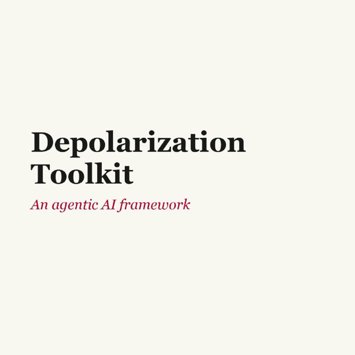

Depolarization Toolkit: an agentic AI framework
In collaboration with Deutsche Welle (DW) Akademie and UNDP, we are developing an open, AI-powered assistant that supports development practitioners, consultants, and policy advisors in their programming, advisory, and policy-design work on mitigating political polarization. Rising polarization erodes institutional trust and, as the UNDP Human Development Report documents, slows progress across development goals. Yet the guidance practitioners rely on still lives in static, 100-page PDFs that are rarely updated, hard to navigate, and impossible to adapt to fast-moving, low-resource settings. Our tool replaces that model with a conversational interface: users describe their situation and receive context-specific guidance, a draft action plan, a risk assessment, and a stakeholder map, each grounded in vetted evidence. The tool builds on a multi-agent architecture: a retrieval agent runs optimized search; a context agent adapts outputs to the user's role, sector, and country; a scenario agent generates branching decision simulations; a structured-output agent drafts action plans and risk matrices; a quality-assurance agent fact-checks every output against the repository; and a translation agent delivers multilingual access. Each agent is independently testable and upgradable.
Project page →
CityInclusive
Advocating for social inclusion in the design of smart cities, on our digital platform, we documented the work of Canadian cities as they went through the process of developing applications for the Smart Cities Challenge Canada.
Link here →